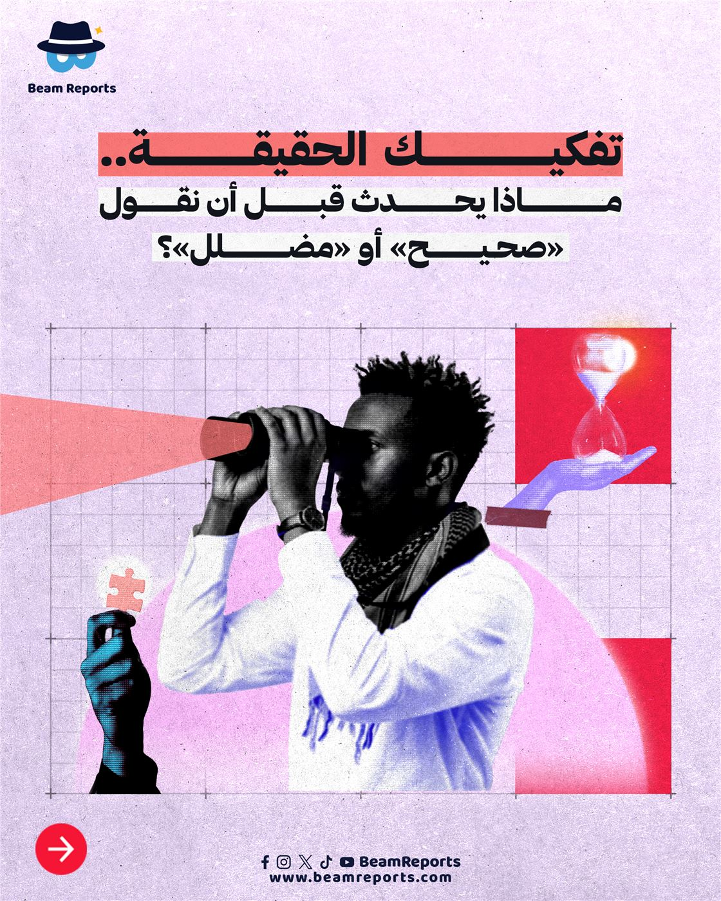
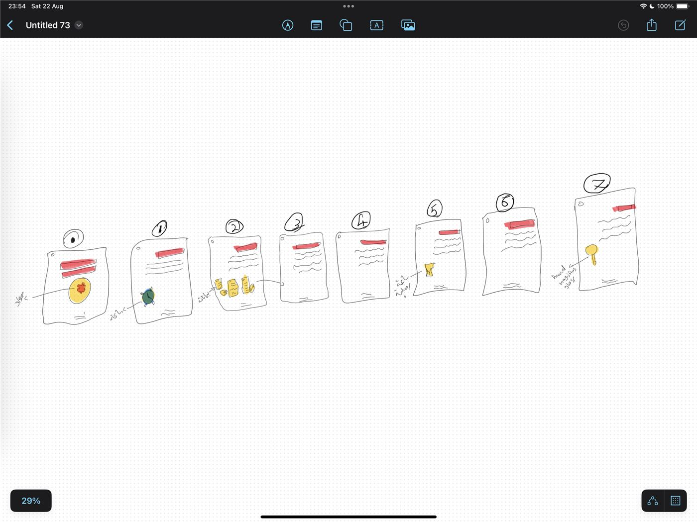
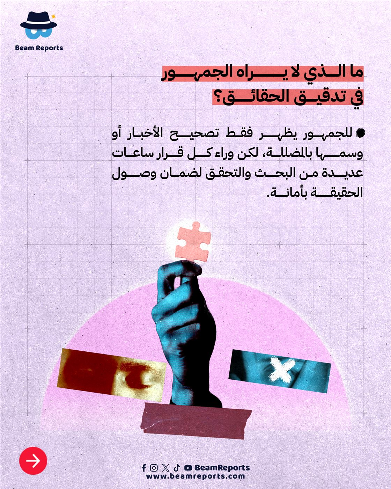
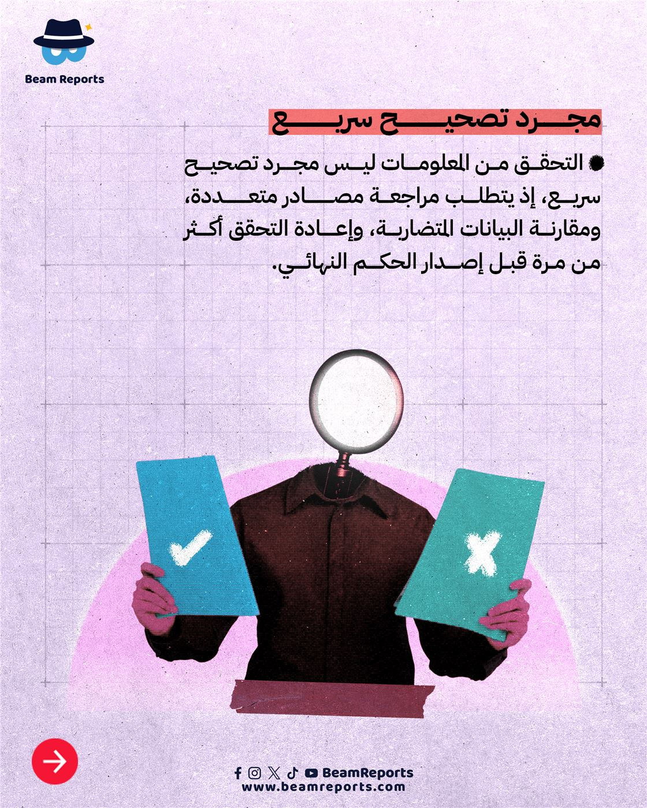
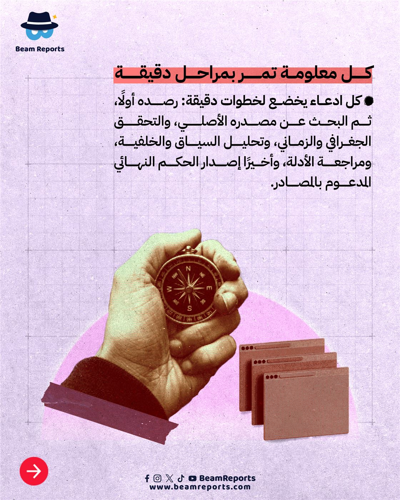
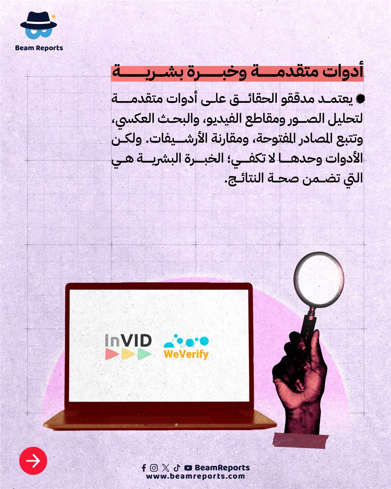
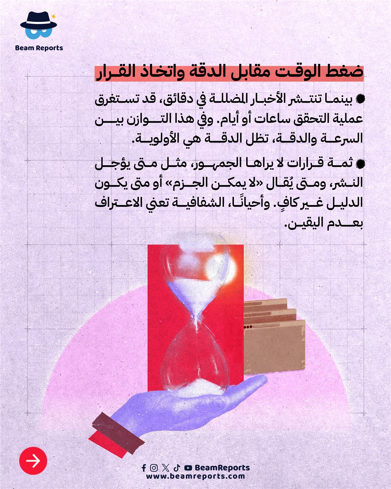
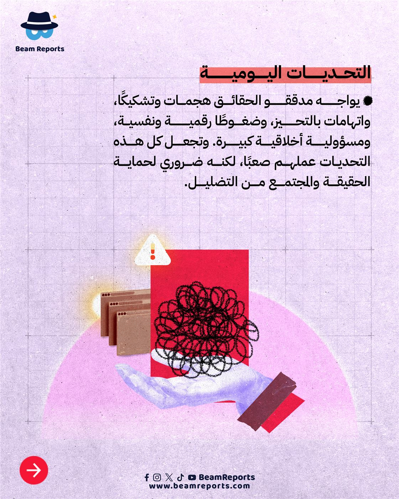

Deconstructing the Truth
Visualizing the fact-check process.

Context & process
International Fact-Checking Day called for content that could pull back the curtain on the fact-checking process itself, showing what happens before a claim is labeled true or misleading, rather than simply asserting that fact-checking matters. An editor wrote the carousel's copy; working from it, I originated the visual concept and structure myself.
Early process
Thumbnail sketches mapped out the carousel's eight beats before illustration, sequencing visual metaphors (a magnifying glass, a turtle signaling deliberate pacing, cross-referenced documents, an hourglass, a key) so each slide built logically toward the final reveal, rather than repeating one idea eight times.

The decision
How do you make an invisible, methodical process feel urgent rather than clinical?
I built the lead visual around an investigator using binoculars, with a light beam cutting across a grid background to suggest analytical scrutiny. An hourglass and a puzzle piece reinforce the two forces at play, time pressure and incomplete information, while high-contrast black and white against a bold coral palette keeps the tone editorial rather than instructional.






Outcome
Facebook: 559 views, 21 interactions. Instagram: 557 views, 214 reach, 13 interactions.
Reflection
Reach was modest compared to the other series, but Facebook's engagement-to-view ratio held up well: the piece resonated with the audience it reached, even without broad distribution.